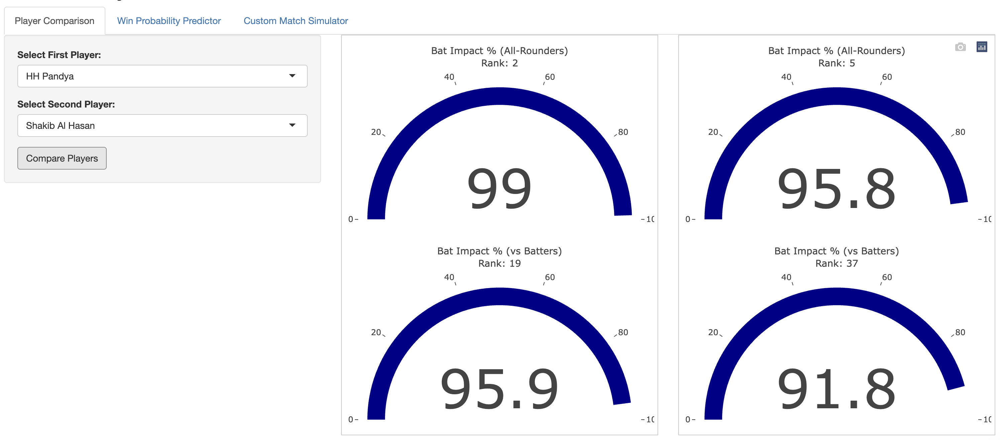
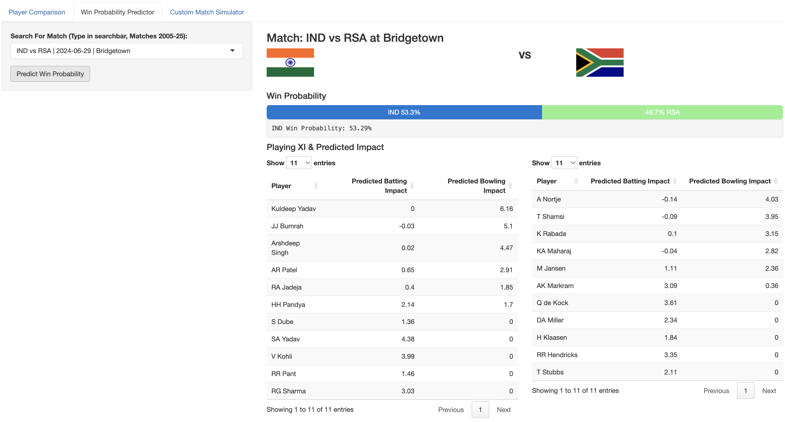
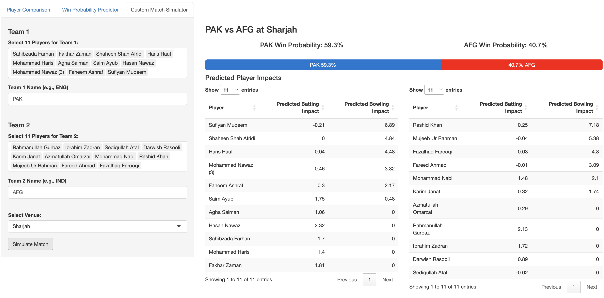

6 Web App for Predicting Games and Player Impact - App.R (located in Shiny_App code folder)
The app is available at: https://archithsharma.shinyapps.io/Cricket-Analyzer/, with three tools:
Player Comparison Tool
Past Match Model Output
Predict Future Match based on Playing XI
6.1 Player Comparison Tool
The player comparison tool will compare two players based on their batting and bowling impact per game. For all-rounders, it will show the value relative to all-rounders for bowling and batting as well.

Figure 6.1: Comparison between Hardik Pandya & Shakib al Hasan
6.2 Past Match Model Output
The past match model output will show the player impact for both teams in a past match, and the predicted winner based on the logistic regression model.
Figure 6.2: Past Match Model Output
IND vs RSA, T20 WC Final 2024
6.3 Predict Future Match based on Playing XI
The predict future match based on playing XI will allow the user to select a playing XI for two teams (any player), and the venue. The model will then predict the win probability for both teams based on the logistic regression model.
An example was tested for the most recent T20I match between Afghanistan and Pakistan. The model’s most recent data update was on August 16, 2025, and the match was played on August 29, 2025. The model predicted a 60% win probability for Pakistan, who went on to win the match by 39 runs, further legitimizing the model.

Figure 6.3: Predict Future Match based on Playing XI for AFG vs PAK, T20I, August 29 2025
The code for the app is located in the Shiny_App folder, in the App.R file. All other code is included in the markdown file or available on github, in https://github.com/ArchithSharma/CricketPredictions/.